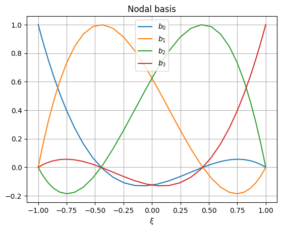
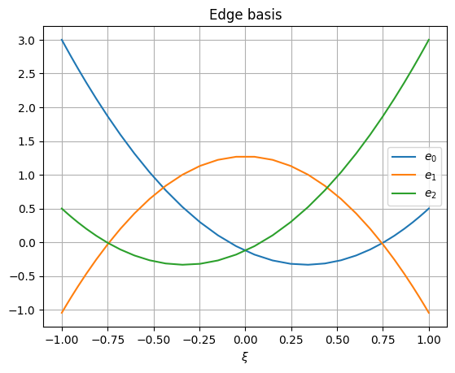

_mfv2d#
Internal module which includes functions written in C. These are mostly intended to improve the speed. There are also some types where the speed is not key, but they need to be passed to to other C functions.
Polynomials#
Since basis are made from Lagrange polynomials and their derivatives to be computed often, calculations of these are implemented in C, using the most efficient algorithms I could manage, which also have high accuracy for high degrees of these polynomials.
Another commonly required operation is computing Gauss-Legendre-Lobatto nodes and associated integration weights. As such, these are also handled in C. If even this is not fast enough, just consider caching them.
- mfv2d._mfv2d.lagrange1d(roots: array_like, x: array_like, out: array | None = None, /) array#
Evaluate Lagrange polynomials.
This function efficiently evaluates Lagrange basis polynomials, defined by
\[\mathcal{L}^n_i (x) = \prod\limits_{j=0, j \neq i}^{n} \frac{x - x_j}{x_i - x_j},\]where the
rootsspecifies the zeros of the Polynomials \(\{x_0, \dots, x_n\}\).- Parameters:
roots (array_like) – Roots of Lagrange polynomials.
x (array_like) – Points where the polynomials should be evaluated.
out (array, optional) – Array where the results should be written to. If not given, a new one will be created and returned. It should have the same shape as
x, but with an extra dimension added, the length of which islen(roots).
- Returns:
Array of Lagrange polynomial values at positions specified by
x.- Return type:
array
Examples
This example here shows the most basic use of the function to evaluate Lagrange polynomials. First, let us define the roots.
>>> import numpy as np >>> >>> order = 7 >>> roots = - np.cos(np.linspace(0, np.pi, order + 1))
Next, we can evaluate the polynomials at positions. Here the interval between the roots is chosen.
>>> from mfv2d._mfv2d import lagrange1d >>> >>> xpos = np.linspace(np.min(roots), np.max(roots), 128) >>> yvals = lagrange1d(roots, xpos)
Note that if we were to give an output array to write to, it would also be the return value of the function (as in no copy is made).
>>> yvals is lagrange1d(roots, xpos, yvals) True
True
Now we can plot these polynomials.
>>> from matplotlib import pyplot as plt >>> >>> plt.figure() >>> for i in range(order + 1): ... plt.plot( ... xpos, ... yvals[..., i], ... label=f"$\\mathcal{{L}}^{{{order}}}_{{{i}}}$" ... ) >>> plt.gca().set( ... xlabel="$x$", ... ylabel="$y$", ... title=f"Lagrange polynomials of order {order}" ... ) >>> plt.legend() >>> plt.grid() >>> plt.show()

Accuracy is retained even at very high polynomial order. The following snippet shows that even at absurdly high order of 51, the results still have high accuracy and don’t suffer from rounding errors. It also performs well (in this case, the 52 polynomials are each evaluated at 1025 points).
>>> from time import perf_counter >>> order = 51 >>> roots = - np.cos(np.linspace(0, np.pi, order + 1)) >>> xpos = np.linspace(np.min(roots), np.max(roots), 1025) >>> t0 = perf_counter() >>> yvals = lagrange1d(roots, xpos) >>> t1 = perf_counter() >>> print(f"Calculations took {t1 - t0: e} seconds.") >>> plt.figure() >>> for i in range(order + 1): ... plt.plot( ... xpos, ... yvals[..., i], ... label=f"$\\mathcal{{L}}^{{{order}}}_{{{i}}}$" ... ) >>> plt.gca().set( ... xlabel="$x$", ... ylabel="$y$", ... title=f"Lagrange polynomials of order {order}" ... ) >>> # plt.legend() # No, this is too long >>> plt.grid() >>> plt.show()
Calculations took 1.246447e-03 seconds.

- mfv2d._mfv2d.dlagrange1d(roots: array_like, x: array_like, out: array | None = None, /) array#
Evaluate derivatives of Lagrange polynomials.
This function efficiently evaluates Lagrange basis polynomials derivatives, defined by
\[\frac{d \mathcal{L}^n_i (x)}{d x} = \sum\limits_{j=0,j \neq i}^n \prod\limits_{k=0, k \neq i, k \neq j}^{n} \frac{1}{x_i - x_j} \cdot \frac{x - x_k}{x_i - x_k},\]where the
rootsspecifies the zeros of the Polynomials \(\{x_0, \dots, x_n\}\).- Parameters:
roots (array_like) – Roots of Lagrange polynomials.
x (array_like) – Points where the derivatives of polynomials should be evaluated.
out (array, optional) – Array where the results should be written to. If not given, a new one will be created and returned. It should have the same shape as
x, but with an extra dimension added, the length of which islen(roots).
- Returns:
Array of Lagrange polynomial derivatives at positions specified by
x.- Return type:
array
Examples
This example here shows the most basic use of the function to evaluate derivatives of Lagrange polynomials. First, let us define the roots.
>>> import numpy as np >>> >>> order = 7 >>> roots = - np.cos(np.linspace(0, np.pi, order + 1))
Next, we can evaluate the polynomials at positions. Here the interval between the roots is chosen.
>>> from mfv2d._mfv2d import dlagrange1d >>> >>> xpos = np.linspace(np.min(roots), np.max(roots), 128) >>> yvals = dlagrange1d(roots, xpos)
Note that if we were to give an output array to write to, it would also be the return value of the function (as in no copy is made).
>>> yvals is dlagrange1d(roots, xpos, yvals) True
True
Now we can plot these polynomials.
>>> from matplotlib import pyplot as plt >>> >>> plt.figure() >>> for i in range(order + 1): ... plt.plot( ... xpos, ... yvals[..., i], ... label=f"${{\\mathcal{{L}}^{{{order}}}_{{{i}}}}}^\\prime$" ... ) >>> plt.gca().set( ... xlabel="$x$", ... ylabel="$y$", ... title=f"Lagrange polynomials of order {order}" ... ) >>> plt.legend() >>> plt.grid() >>> plt.show()

Accuracy is retained even at very high polynomial order. The following snippet shows that even at absurdly high order of 51, the results still have high accuracy and don’t suffer from rounding errors. It also performs well (in this case, the 52 polynomials are each evaluated at 1025 points).
>>> from time import perf_counter >>> order = 51 >>> roots = - np.cos(np.linspace(0, np.pi, order + 1)) >>> xpos = np.linspace(np.min(roots), np.max(roots), 1025) >>> t0 = perf_counter() >>> yvals = dlagrange1d(roots, xpos) >>> t1 = perf_counter() >>> print(f"Calculations took {t1 - t0: e} seconds.") >>> plt.figure() >>> for i in range(order + 1): ... plt.plot( ... xpos, ... yvals[..., i], ... label=f"${{\\mathcal{{L}}^{{{order}}}_{{{i}}}}}^\\prime$" ... ) >>> plt.gca().set( ... xlabel="$x$", ... ylabel="$y$", ... title=f"Lagrange polynomials of order {order}" ... ) >>> # plt.legend() # No, this is too long >>> plt.grid() >>> plt.show()
Calculations took 3.022308e-02 seconds.

- mfv2d._mfv2d.compute_gll(order: int, /, max_iter: int = 10, tol: float = 1e-15) tuple[array, array]#
Compute Gauss-Legendre-Lobatto integration nodes and weights.
If you are often re-using these, consider caching them.
- Parameters:
- Returns:
array – Array of
order + 1integration nodes on the interval \([-1, +1]\).array – Array of integration weights which correspond to the nodes.
Examples
Gauss-Legendre-Lobatto nodes computed using this function, along with the weights.
>>> import numpy as np >>> from mfv2d._mfv2d import compute_gll >>> from matplotlib import pyplot as plt >>> >>> n = 5 >>> nodes, weights = compute_gll(n) >>> >>> # Plot these >>> plt.figure() >>> plt.scatter(nodes, weights) >>> plt.xlabel("$\\xi$") >>> plt.ylabel("$w$") >>> plt.grid() >>> plt.show()

Since these are computed in an iterative way, giving a tolerance which is too strict or not allowing for sufficient iterations might cause an exception to be raised to do failiure to converge.
There is also a function to evaluate Legendre polynomials. This is intended to be used for computing smoothness measures. These are used for refinement.
- mfv2d._mfv2d.compute_legendre()#
compute_lagrange_polynomials(order: int, positions: array_like, out: array|None = None) -> array Compute Legendre polynomials at given nodes.
- Parameters:
order (int) – Order of the scheme. The number of node-weight pairs is one more.
positions (array_like) – Positions where the polynomials should be evaluated at.
out (array, optional) – Output array to write to. If not specified, then a new array is allocated. Must have the exact correct shape (see return value) and data type (double/float64).
- Returns:
Array with the same shape as
positionsparameter, except with an additional first dimension, which determines which Legendre polynomial it is.- Return type:
array
Examples
To quickly illustrate how this function can be used to work with Legendre polynomials, some simple examples are shown.
First things first, the function can be called for any order of polynomials, with about any shape of input array (though if you put too many dimensions you will get an exception). Also, you can supply an optional output parameter, such that an output array need not be newly allocated.
>>> import numpy as np >>> from mfv2d._mfv2d import compute_legendre >>> >>> n = 5 >>> positions = np.linspace(-1, +1, 101) >>> vals = compute_legendre(n, positions) >>> assert vals is compute_legendre(n, positions, vals)
The output array will always have the same shape as the input array, with the only difference being that a new axis is added for the first dimension, which can be indexed to distinguish between the different Legendre polynomials.
>>> from matplotlib import pyplot as plt >>> >>> fig, ax = plt.subplots(1, 1) >>> >>> for i in range(n + 1): >>> ax.plot(positions, vals[i, ...], label=f"$y = \\mathcal{{L}}_{{{i:d}}}$") >>> >>> ax.set(xlabel="$x$", ylabel="$y$") >>> ax.grid() >>> ax.legend() >>> >>> fig.tight_layout() >>> plt.show()

Lastly, these polynomials are all orthogonal under the \(L^2\) norm. This can be shown numerically as well.
>>> from mfv2d._mfv2d import IntegrationRule1D >>> >>> rule = IntegrationRule1D(n + 1) >>> >>> vals = compute_legendre(n, rule.nodes) >>> >>> for i1 in range(n + 1): >>> p1 = vals[i1, ...] >>> for i2 in range(n + 1): >>> p2 = vals[i2, ...] >>> >>> integral = np.sum(p1 * p2 * rule.weights) >>> >>> if i1 != i2: >>> assert abs(integral) < 1e-16
Basis#
In order to define a set of basis, which can be integrated, an integration
rule is defined by an IntegrationRule1D. This is essentially wrapped
result of compute_gll() in an object.
- class mfv2d._mfv2d.IntegrationRule1D(order: int)#
Type used to contain integration rule information.
- Parameters:
order (int) – Order of integration rule used. Can not be negative.
- nodes#
Position of integration nodes on the reference domain [-1, +1] where the integrated function should be evaluated.
- Type:
array
- weights#
Weight values by which the values of evaluated function should be multiplied by.
- Type:
array
Based on an integration rule, one-dimensional basis can be defined with the
Basis1D type. This is in essence a wrapper around lagrange1d()
and dlagrange1d() that are passed nodes from compute_gll() and
keep a reference to an IntegrationRule1D instance to integrate them.
- class mfv2d._mfv2d.Basis1D(order: int, rule: IntegrationRule1D)#
One-dimensional basis functions collection used for FEM space creation.
- Parameters:
order (int) – Order of basis used.
rule (IntegrationRule1D) – Integration rule for basis creation.
Examples
An example of how these basis might look for a 3-rd order element is shown bellow.
>>> from matplotlib import pyplot >>> from mfv2d._mfv2d import Basis1D, IntegrationRule1D >>> >>> #Make a high order rule to make it easy to visualize >>> rule = IntegrationRule1D(order=31) >>> basis = Basis1D(3, rule)
Now the nodal basis can be plotted:
>>> plt.figure() >>> for i in range(basis.order + 1): ... plt.plot(basis.rule.nodes, basis.node[i, ...], label=f"$b_{{{i}}}$") >>> plt.grid() >>> plt.legend() >>> plt.xlabel("$\\xi$") >>> plt.title("Nodal basis") >>> plt.show()
Edge basis can also be shown:
>>> plt.figure() >>> for i in range(basis.order): ... plt.plot(basis.rule.nodes, basis.edge[i, ...], label=f"$e_{{{i}}}$") >>> plt.grid() >>> plt.legend() >>> plt.xlabel("$\\xi$") >>> plt.title("Edge basis") >>> plt.show()
- edge#
Edge basis values.
- Type:
array
- node#
Nodal basis values.
- Type:
array
- roots#
Roots of the nodal basis.
- Type:
array
- rule#
integration rule used
- Type:
Two dimensional basis are constructed from tensor products of one-dimensional
basis. As such the Basis2D type is merely a container for two
one-dimensional basis.
Topology#
Toplogy information is used when constructing continuity constraints on degrees of freedom. As such, these types allow for very quick and precice lookup of neighbours, computations of duals, and other required operations.
The base building block is the GeoID type, which is a combination of
a geometrical object’s index and an indicator of its orientation. Often time
functions will allow GeoID arguments to be replaced by 1-based integer
index, with its sign indicating orientation.
The index of a GeoID can also be considered invalid. For functions
that allow integer along with GeoID this would correspond to passing
the value of 0. In that case a value would be equivalent to False in
any boolean context.
- class mfv2d._mfv2d.GeoID(index: int, reverse=False)#
Type used to identify a geometrical object with an index and orientation.
For many functions which take
GeoIDargument(s), a 1-based integer index can be used instead, with negative values indicating reverse orientation and the value of0indicating an invalid value.There are also some convenience operators implemented on this type, such as the negation operator to negate orientation, as well as a comparison operator, which allows for comparison of GeoIDs with one another, as well as with
intobjects to check if they are indeed equivalent.- Parameters:
index (int) – Index of the geometrical object. Can not be negative.
reverse (any, default: False) – The object’s orientation should be reversed.
Examples
Here are some examples of how these objects can be used:
>>> from mfv2d._mfv2d import GeoID >>> id1 = GeoID(0) >>> print(id1) >>> print(-id1) >>> -id1 == -1 True
+0 -0
True
A Line is a one-dimensional topological object that connects two
points with their respective GeoID indices. For a dual line,
point indices indicate indices of primal surfaces valid index, with its
orientation indicating whether or not the line was in the surface in its
positive or negative orientation.
While for primal lines, both points have valid indices, dual lines may not. This happens when a primal line is on the external boundary of the manifold. In that case, the side which has no valid index is comming from bordering on no surfaces on that side.
- class mfv2d._mfv2d.Line(begin: GeoID | int, end: GeoID | int)#
Geometrical object, which connects two points.
Lines can also be converted into
numpyarrays directly, which essentially converts their beginning and end indices into integers equivalent to theirGeoIDvalues.- Parameters:
Examples
This section just serves to briefly illustrate how a line can be used.
>>> import numpy as np >>> from mfv2d._mfv2d import Line >>> ln = Line(1, 2) >>> print(ln) >>> # this one has an invalid point >>> ln2 = Line(0, 3) >>> print(np.array(ln2)) >>> print(bool(ln2.begin))
(+0 -> +1) [-2147483648 3] False
The last of the topological primitives is the Surface. Surfaces
consist of an arbitraty number of lines. This is because dual surfaces
corresponding to nodes on the corners of a mesh will in almost all cases
have a number of lines different than four.
- class mfv2d._mfv2d.Surface(*ids: GeoID | int)#
Two dimensional geometrical object, which is bound by lines.
Since surface can contain a variable number of lines, it has methods based on containers, such as
len, which allow for iterations.Examples
Some examples of what can be done with surfaces are presented here.
First, the length of the surface can be obtained by using
len()build-in.>>> import numpy as np >>> from mfv2d._mfv2d import GeoID, Surface >>> >>> surf = Surface(1, 2, 3, -4) >>> len(surf) 4
4
Next, the surface can be iterated over:
>>> for gid in surf: ... print(gid)
+0 +1 +2 -3
The surface can also be converted into a
numpyarray directly.>>> print(np.array(surf))
[ 1 2 3 -4]
Surfaces can together form a Manifold2D object. This is a
collection of surfaces which supports most of needed topological
operations. It is used for obtaining connectivity of the top level
surfaces. As such, it is used in Mesh type.
- class mfv2d._mfv2d.Manifold2D#
Two dimensional manifold consisting of surfaces made of lines. .. rubric:: Examples
This is an example of how a manifold may be used:
>>> import numpy as np >>> from mfv2d._mfv2d import Manifold2D, Surface, Line, GeoID >>> >>> triangle = Manifold2D.from_regular( ... 3, ... [Line(1, 2), Line(2, 3), Line(1, 3)], ... [Surface(1, 2, -3)], ... ) >>> print(triangle)
Manifold2D(3 points, 3 lines, 1 surfaces)
The previous case only had one surface. In that case, or if all surface have the same number of lines, the class method
Manifold2D.from_regular()can be used. If the surface do not have the same number of lines, that can not be used. Instead, theManifold2D.from_irregular()class method should be used.>>> house = Manifold2D.from_irregular( ... 5, ... [ ... (1, 2), (2, 3), (3, 4), (4, 1), #Square ... (1, 5), (5, 2), # Roof ... ], ... [ ... (1, 2, 3, 4), # Square ... (-1, 5, 6), # Triangle ... ] ... ) >>> print(house)
Manifold2D(5 points, 6 lines, 2 surfaces)
From these manifolds, surfaces or edges can be querried back. This is mostly useful when the dual is also computed, which allows to obtain information about neighbouring objects. For example, if we want to know what points are neighbours of point with index 2, we would do the following:
>>> pt_id = GeoID(1, 0) >>> dual = house.compute_dual() # Get the dual manifold >>> # Dual surface corresponding to primal point 1 >>> dual_surface = dual.get_surface(pt_id) >>> print(dual_surface) >>> for line_id in dual_surface: ... if not line_id: ... continue ... primal_line = house.get_line(line_id) ... if primal_line.begin == pt_id: ... pt = primal_line.end ... else: ... assert primal_line.end == pt_id ... pt = primal_line.begin ... print(f"Point {pt_id} neighbours point {pt}")
(-0 -> +1 -> -5 ->) Point +1 neighbours point +0 Point +1 neighbours point +2 Point +1 neighbours point +4
- compute_dual() Manifold2D#
Compute the dual to the manifold.
A dual of each k-dimensional object in an n-dimensional space is a (n-k)-dimensional object. This means that duals of surfaces are points, duals of lines are also lines, and that the duals of points are surfaces.
A dual line connects the dual points which correspond to surfaces which the line was a part of. Since the change over a line is computed by subtracting the value at the beginning from that at the end, the dual point which corresponds to the primal surface where the primal line has a positive orientation is the end point of the dual line and conversely the end dual point is the one corresponding to the surface which contained the primal line in the negative orientation. Since lines may only be contained in a single primal surface, they may have an invalid ID as either their beginning or their end. This can be used to determine if the line is actually a boundary of the manifold.
A dual surface corresponds to a point and contains dual lines which correspond to primal lines, which contained the primal point of which the dual surface is the result of. The orientation of dual lines in this dual surface is positive if the primal line of which they are duals originated in the primal point in question and negative if it was their end point.
- Returns:
Dual manifold.
- Return type:
- classmethod from_irregular(n_points: int, line_connectivity: array_like, surface_connectivity: Sequence[array_like]) Self#
Create Manifold2D from surfaces with non-constant number of lines.
- Parameters:
n_points (int) – Number of points in the mesh.
line_connectivity ((N, 2) array_like) – Connectivity of points which form lines in 0-based indexing.
surface_connectivity (Sequence of array_like) – Sequence of arrays specifying connectivity of mesh surfaces in 1-based indexing, where a negative value means that the line’s orientation is reversed.
- Returns:
Two dimensional manifold.
- Return type:
Self
- classmethod from_regular(n_points: int, line_connectivity: array_like, surface_connectivity: array_like) Self#
Create Manifold2D from surfaces with constant number of lines.
- Parameters:
n_points (int) – Number of points in the mesh.
line_connectivity ((N, 2) array_like) – Connectivity of points which form lines in 0-based indexing.
surface_connectivity (array_like) – Two dimensional array-like object specifying connectivity of mesh surfaces in 1-based indexing, where a negative value means that the line’s orientation is reversed.
- Returns:
Two dimensional manifold.
- Return type:
Self
- n_lines#
Number of lines in the mesh.
- n_points#
Number of points in the mesh.
- n_surfaces#
Number of surfaces in the mesh.
For hierarchical refinement, individual surfaces of the manifold can
be subdivided into smaller sub-surfaces. Dealing with this hierarchy
id done with the Mesh type, which was written in C because
doing it purely in Python was something I tried to code about three times
already, but did not end up working, and this is much nicer with C’s
union.
- class mfv2d._mfv2d.Mesh(primal: Manifold2D, dual: Manifold2D, corners: array, orders: array, boundary: array)#
Mesh containing topology, geometry, and discretization information.
- Parameters:
primal (Manifold2D) – Primal topology manifold.
dual (Manifold2D) – Dual topology manifold.
corners ((N, 4, 2) array) – Array of element corners.
orders ((N, 2) array) – Array of element orders.
boundary ((N,) array) – Array of boundary edge indices.
- boundary_indices#
Indices of the boundary elements.
- Type:
array
- dual#
Dual manifold topology.
- Type:
mfv2d._mfv2d.Manifold2d
- find_leaf_by_index(idx: SupportsIndex, /) int#
Find the leaf with the specified index relative to all leaves.
Assuming that
iis a valid leaf element index, theni == mesh.find_leaf_by_index(mesh.get_leaf_index(i)).
- get_element_children(idx: SupportsIndex, /) tuple[int, int, int, int] | None#
Get indices of element’s children.
- Parameters:
idx (SupportsIndex) – Index of the element to get the children for.
- Returns:
If the element has children, their indices are returned in the order bottom left, bottom right, top right, and top left. If the element is a leaf element and has no parents,
Noneis returned.- Return type:
- get_element_depth(idx: SupportsIndex, /) int#
Check how deep the element is in the hierarchy.
- Parameters:
idx (SupportsIndex) – Index of the element element to check.
- Returns:
Number of ancestors of the element.
- Return type:
- get_element_parent(idx: SupportsIndex, /) int | None#
Get the index of the element’s parent or
Noneif it is a root element.- Parameters:
idx (SupportsIndex) – Index of the element to get the parent from.
- Returns:
If the element has a parent, its index is returned. If the element is a root element and has no parent,
Noneis returned instead.- Return type:
int or None
- get_leaf_corners(idx: SupportsIndex, /) npt.NDArray[np.double]#
Get corners of the leaf element.
- Parameters:
idx (SupportsIndex) – Index of the leaf element to get the orders for.
- Returns:
Corners of the element in the counter-clockwise order, starting at the bottom left corner.
- Return type:
(4, 2) array
- get_leaf_index(idx: SupportsIndex, /) int#
Get the index of the leaf at which it appears relative to all leaf elements.
- get_leaf_indices() npt.NDArray[np.uintc]#
Get indices of leaf elements.
- Returns:
Indices of leaf elements.
- Return type:
(N,) array
- get_leaf_orders(idx: SupportsIndex, /) tuple[int, int]#
Get orders of the leaf element.
- primal#
Primal manifold topology.
- Type:
mfv2d._mfv2d.Manifold2d
- set_leaf_orders(idx: SupportsIndex, /, order_1: int, order_2: int) None#
Set orders of a leaf element.
- split_breath_first(maximum_depth: int, predicate: Callable, *args, **kwargs) Mesh#
Split leaf elements based on a predicate in a breath-first approach.
- Parameters:
maximum_depth (int) – Maximum number of levels of division allowed.
predicate (Callable) – Predicate to use for determining if the element should be split. It will always be given the mesh as the first argument and the ID of the element as its second argument. If the element should not be split, the function should return
None, otherwise it should return orders for all four newly created elements.*args – Arguments passed to the predicate function.
**kwargs – Keyword arguments passed to the predicate function.
- Returns:
Mesh with refined elements.
- Return type:
- split_depth_first(maximum_depth: int, predicate: Callable, *args, **kwargs) Mesh#
Split leaf elements based on a predicate in a depth-first approach.
- Parameters:
maximum_depth (int) – Maximum number of levels of division allowed.
predicate (Callable) – Predicate to use for determining if the element should be split. It will always be given the mesh as the first argument and the ID of the element as its second argument. If the element should not be split, the function should return
None, otherwise it should return orders for all four newly created elements.*args – Arguments passed to the predicate function.
**kwargs – Keyword arguments passed to the predicate function.
- Returns:
Mesh with refined elements.
- Return type:
- split_element(idx: SupportsIndex, /, orders_bottom_left: tuple[int, int], orders_bottom_right: tuple[int, int], orders_top_right: tuple[int, int], orders_top_left: tuple[int, int]) None#
Split a leaf element into four child elements.
- Parameters:
idx (SupportsIndex) – Index of the element to split. Must be a leaf.
orders_bottom_left ((int, int)) – Orders of the newly created bottom left elements.
orders_bottom_right ((int, int)) – Orders of the newly created bottom right elements.
orders_top_right ((int, int)) – Orders of the newly created top right elements..
orders_top_left ((int, int)) – Orders of the newly created top left elements.
Evaluating Terms#
One of key operations that need to be supported in order to solve a
system is either computation of element matrices, or computing what
is their product with the current solution vector. The instruction
translation and generation is handled by the mfv2d.eval module,
so as far as mfv2d._mfv2d code is concerned, it receives parsed
bytecode it just needs to execute.
One of the most important functions in the entire module is
compute_element_matrix(). This can be used to generate individual
element matrices for the system, which can then be combined into the
global system matrix.
- mfv2d._mfv2d.compute_element_matrix(form_specs: _ElementFormsSpecs, expressions: mfv2d.eval._CompiledCodeMatrix, fem_space: ElementFemSpace2D, degrees_of_freedom: array | None = None, stack_memory: int = 1 << 24) NDArray#
Compute a single element matrix.
- Parameters:
form_specs (_ElementFormsSpecs) – Specification of differential forms that make up the system.
expressions (mfv2d.eval._CompiledCodeMatrix) – Instructions to execute for each block in the system.
fem_space (ElementFemSpace2D) – Element’s FEM space.
degrees_of_freedom (array, optional) – Degrees of freedom for the element. If specified, these are used for non-linear interior product terms.
stack_memory (int, default: 1 << 24) – Amount of memory to use for the evaluation stack.
- Returns:
Element matrix for the specified system.
- Return type:
array
If evaluation of the product of the solution vector with the matrix is
needed, instead of computing it with compute_element_matrix(), it can
instead be obtained from compute_element_vector(). This is especially
useful for non-linear terms, since they would require matrices to be evaulated
at every iteration.
- mfv2d._mfv2d.compute_element_vector(form_orders: Sequence[int], expressions: _CompiledCodeMatrix, corners: array, vector_fields: Sequence[array], basis: Basis2D, solution: array, stack_memory: int = 1 << 24) array#
Compute a single element forcing.
- Parameters:
form_orders (Sequence of int) – Orders of differential forms for the degrees of freedom. Must be between 0 and 2.
expressions – Compiled bytecode to execute.
corners ((4, 2) array) – Array of corners of the element.
vector_fields (Sequence of arrays) – Vector field arrays as required for interior product evaluations.
basis (Basis2D) – Basis functions with integration rules to use.
solution (array) – Array with degrees of freedom for the element.
stack_memory (int, default: 1 << 24) – Amount of memory to use for the evaluation stack.
- Returns:
Element vector for the specified system.
- Return type:
array
To make it simple to pass information about the \(k\)-forms in the equation
between C and Python, the type _ElementFormSpecification is
introduced, which is then inherrited by
mfv2d.system.ElementFormSpecification.
- class mfv2d._mfv2d._ElementFormSpecification(*specs: tuple[str, int])#
Specifications of forms defined on an element.
- Parameters:
*specs (tuple of (str, int)) – Specifications for differential forms on the element. Each label must be unique and order have a valid value which is in
mfv2d.kform.UnknownFormOrder.
- form_offset(idx: SupportsIndex, /, order_1: int, order_2: int) int#
Get the offset of the form in the element.
- Parameters:
idx (SupportsIndex) – Index of the form.
order_1 (int) – Order of the element in the first dimension.
order_2 (int) – Order of the element in the second dimension.
- Returns:
Offset of degrees of freedom of the differential form.
- Return type:
- form_offsets(order_1: int, order_2: int) tuple[int, ...]#
Get the offsets of all forms in the element.
- Parameters:
- Returns:
Offsets of degrees of freedom for all differential forms, with an extra entry at the end, which is the count of all degrees of freedom.
- Return type:
- form_size(idx: SupportsIndex, /, order_1: int, order_2: int) int#
Get the number of degrees of freedom of the form in the element.
- Parameters:
idx (SupportsIndex) – Index of the form.
order_1 (int) – Order of the element in the first dimension.
order_2 (int) – Order of the element in the second dimension.
- Returns:
Number of degrees of freedom of the differential form.
- Return type:
- form_sizes(order_1: int, order_2: int) tuple[int, ...]#
Get the number of degrees of freedom for each form in the element.
- index(value: tuple[str, int], /) int#
Return the index of the form with the given label and order in the specs.
- total_size(order_1: int, order_2: int) int#
Get the total number of degrees of freedom of the forms.
- Parameters:
idx (SupportsIndex) – Index of the form.
order_1 (int) – Order of the element in the first dimension.
order_2 (int) – Order of the element in the second dimension.
- Returns:
Total number of degrees of freedom of all differential forms.
- Return type:
Enum Values#
Evaluation instruction bytecode use instructions, which must match between the C and the Python version. To avoid the hassle of circular dependencies just to add type hints, these are defined separately in Python and C.
Instead, to ensure they match, a one of tests checks that these enum values
match that of mfv2d.eval.MatOpCode.
- mfv2d._mfv2d.MATOP_INVALID = 0#
int([x]) -> integer int(x, base=10) -> integer
Convert a number or string to an integer, or return 0 if no arguments are given. If x is a number, return x.__int__(). For floating-point numbers, this truncates towards zero.
If x is not a number or if base is given, then x must be a string, bytes, or bytearray instance representing an integer literal in the given base. The literal can be preceded by ‘+’ or ‘-’ and be surrounded by whitespace. The base defaults to 10. Valid bases are 0 and 2-36. Base 0 means to interpret the base from the string as an integer literal. >>> int(‘0b100’, base=0) 4
- mfv2d._mfv2d.MATOP_IDENTITY = 1#
int([x]) -> integer int(x, base=10) -> integer
Convert a number or string to an integer, or return 0 if no arguments are given. If x is a number, return x.__int__(). For floating-point numbers, this truncates towards zero.
If x is not a number or if base is given, then x must be a string, bytes, or bytearray instance representing an integer literal in the given base. The literal can be preceded by ‘+’ or ‘-’ and be surrounded by whitespace. The base defaults to 10. Valid bases are 0 and 2-36. Base 0 means to interpret the base from the string as an integer literal. >>> int(‘0b100’, base=0) 4
- mfv2d._mfv2d.MATOP_MASS = 2#
int([x]) -> integer int(x, base=10) -> integer
Convert a number or string to an integer, or return 0 if no arguments are given. If x is a number, return x.__int__(). For floating-point numbers, this truncates towards zero.
If x is not a number or if base is given, then x must be a string, bytes, or bytearray instance representing an integer literal in the given base. The literal can be preceded by ‘+’ or ‘-’ and be surrounded by whitespace. The base defaults to 10. Valid bases are 0 and 2-36. Base 0 means to interpret the base from the string as an integer literal. >>> int(‘0b100’, base=0) 4
- mfv2d._mfv2d.MATOP_INCIDENCE = 3#
int([x]) -> integer int(x, base=10) -> integer
Convert a number or string to an integer, or return 0 if no arguments are given. If x is a number, return x.__int__(). For floating-point numbers, this truncates towards zero.
If x is not a number or if base is given, then x must be a string, bytes, or bytearray instance representing an integer literal in the given base. The literal can be preceded by ‘+’ or ‘-’ and be surrounded by whitespace. The base defaults to 10. Valid bases are 0 and 2-36. Base 0 means to interpret the base from the string as an integer literal. >>> int(‘0b100’, base=0) 4
- mfv2d._mfv2d.MATOP_PUSH = 4#
int([x]) -> integer int(x, base=10) -> integer
Convert a number or string to an integer, or return 0 if no arguments are given. If x is a number, return x.__int__(). For floating-point numbers, this truncates towards zero.
If x is not a number or if base is given, then x must be a string, bytes, or bytearray instance representing an integer literal in the given base. The literal can be preceded by ‘+’ or ‘-’ and be surrounded by whitespace. The base defaults to 10. Valid bases are 0 and 2-36. Base 0 means to interpret the base from the string as an integer literal. >>> int(‘0b100’, base=0) 4
- mfv2d._mfv2d.MATOP_SCALE = 5#
int([x]) -> integer int(x, base=10) -> integer
Convert a number or string to an integer, or return 0 if no arguments are given. If x is a number, return x.__int__(). For floating-point numbers, this truncates towards zero.
If x is not a number or if base is given, then x must be a string, bytes, or bytearray instance representing an integer literal in the given base. The literal can be preceded by ‘+’ or ‘-’ and be surrounded by whitespace. The base defaults to 10. Valid bases are 0 and 2-36. Base 0 means to interpret the base from the string as an integer literal. >>> int(‘0b100’, base=0) 4
- mfv2d._mfv2d.MATOP_SUM = 6#
int([x]) -> integer int(x, base=10) -> integer
Convert a number or string to an integer, or return 0 if no arguments are given. If x is a number, return x.__int__(). For floating-point numbers, this truncates towards zero.
If x is not a number or if base is given, then x must be a string, bytes, or bytearray instance representing an integer literal in the given base. The literal can be preceded by ‘+’ or ‘-’ and be surrounded by whitespace. The base defaults to 10. Valid bases are 0 and 2-36. Base 0 means to interpret the base from the string as an integer literal. >>> int(‘0b100’, base=0) 4
- mfv2d._mfv2d.MATOP_INTERPROD = 7#
int([x]) -> integer int(x, base=10) -> integer
Convert a number or string to an integer, or return 0 if no arguments are given. If x is a number, return x.__int__(). For floating-point numbers, this truncates towards zero.
If x is not a number or if base is given, then x must be a string, bytes, or bytearray instance representing an integer literal in the given base. The literal can be preceded by ‘+’ or ‘-’ and be surrounded by whitespace. The base defaults to 10. Valid bases are 0 and 2-36. Base 0 means to interpret the base from the string as an integer literal. >>> int(‘0b100’, base=0) 4
Similar approach is taken when dealing with enum for sides of elements
mfv2d.mimetic2d.ElementSide.
- mfv2d._mfv2d.ELEMENT_SIDE_BOTTOM = 1#
int([x]) -> integer int(x, base=10) -> integer
Convert a number or string to an integer, or return 0 if no arguments are given. If x is a number, return x.__int__(). For floating-point numbers, this truncates towards zero.
If x is not a number or if base is given, then x must be a string, bytes, or bytearray instance representing an integer literal in the given base. The literal can be preceded by ‘+’ or ‘-’ and be surrounded by whitespace. The base defaults to 10. Valid bases are 0 and 2-36. Base 0 means to interpret the base from the string as an integer literal. >>> int(‘0b100’, base=0) 4
- mfv2d._mfv2d.ELEMENT_SIDE_RIGHT = 2#
int([x]) -> integer int(x, base=10) -> integer
Convert a number or string to an integer, or return 0 if no arguments are given. If x is a number, return x.__int__(). For floating-point numbers, this truncates towards zero.
If x is not a number or if base is given, then x must be a string, bytes, or bytearray instance representing an integer literal in the given base. The literal can be preceded by ‘+’ or ‘-’ and be surrounded by whitespace. The base defaults to 10. Valid bases are 0 and 2-36. Base 0 means to interpret the base from the string as an integer literal. >>> int(‘0b100’, base=0) 4
- mfv2d._mfv2d.ELEMENT_SIDE_TOP = 3#
int([x]) -> integer int(x, base=10) -> integer
Convert a number or string to an integer, or return 0 if no arguments are given. If x is a number, return x.__int__(). For floating-point numbers, this truncates towards zero.
If x is not a number or if base is given, then x must be a string, bytes, or bytearray instance representing an integer literal in the given base. The literal can be preceded by ‘+’ or ‘-’ and be surrounded by whitespace. The base defaults to 10. Valid bases are 0 and 2-36. Base 0 means to interpret the base from the string as an integer literal. >>> int(‘0b100’, base=0) 4
- mfv2d._mfv2d.ELEMENT_SIDE_LEFT = 4#
int([x]) -> integer int(x, base=10) -> integer
Convert a number or string to an integer, or return 0 if no arguments are given. If x is a number, return x.__int__(). For floating-point numbers, this truncates towards zero.
If x is not a number or if base is given, then x must be a string, bytes, or bytearray instance representing an integer literal in the given base. The literal can be preceded by ‘+’ or ‘-’ and be surrounded by whitespace. The base defaults to 10. Valid bases are 0 and 2-36. Base 0 means to interpret the base from the string as an integer literal. >>> int(‘0b100’, base=0) 4
Projections#
There are two functions related to projection of degrees of freedom. These are
concerned with two different types of projection. First is the less intuitive
one and is the the projection between primal and dual degrees of freedom.
This is done by the compute_element_mass_matrix() function, which does
exactly as its name would suggest.
- mfv2d._mfv2d.compute_element_mass_matrix(form_orders: _ElementFormSpecification, corners: array, basis: Basis2D, inverse: bool = False) array#
Compute mass matrix for a given element.
- Parameters:
form_orders (_ElementFormSpecification) – Specification of forms in the element.
corners ((4, 2) array) – Array of corner points of the element.
basis (Basis2D) – Basis used for the test and sample space.
inverse (bool, default: False) – Should the inverse of the matrix be computed instead of its value directly.
- Returns:
Mass matrix (or its inverse if specified) for the appropriate form.
- Return type:
array
The second kind of projection is from a lower order Basis2D to
higher order Basis2D or vice versa. This is performed by the
matrices computed by compute_element_projector(). If its resulting
projection matirx is transposed, it will instead act as the projector for
dual degrees of freedom.
- mfv2d._mfv2d.compute_element_projector(form_orders: Sequence[UnknownFormOrders], corners: array, basis_in: Basis2D, basis_out: Basis2D) tuple[array]:#
Compute \(L^2\) projection from one space to another.
Projection takes DoFs from primal space of the first and takes them to the primal space of the other.
- Parameters:
form_orders (Sequence of UnknownFormOrder) – Sequence of orders of forms which are to be projected.
corners ((4, 2) array) – Array of corner points of the element.
basis_in (Basis2D) – Basis from which the DoFs should be taken.
basis_out (Basis2D) – Basis to which the DoFs are taken.
dual (bool) – Should the projection be to dual space of the output space instead of the primal space.
- Returns:
Tuple where each entry is the respective projection matrix for that form.
- Return type:
tuple of square arrays
Solver Types#
To allow for efficient implimentation of the Schur and preconditioned CG solver for the system some types are implemented in C. These allow for the hybridized system to be stored in an efficient sparse representation and for the operations to be carried out efficiently. With some work, it could even be adapted for a distributed memory architecture.
- class mfv2d._mfv2d.SparseVector#
- classmethod concatenate(*vectors: SparseVector) SparseVector:#
Merge sparse vectors together into a single vector.
- Parameters:
*vectors (SparseVector) – Sparse vectors that should be concatenated.
- Returns:
Newly created sparse vector.
- Return type:
Self
- dot(other: SparseVector) float#
Compute dot product of two sparse vectors.
- Parameters:
other (SparseVector) – The sparse vector with which to take the dot product with. Its dimension must match exactly.
- Returns:
Dot product of the two sparse vectors.
- Return type:
- classmethod from_entries(n: int, indices: array_like, values: array_like) SparseVector:#
Create sparse vector from an array of indices and values.
- Parameters:
n (int) – Dimension of the vector.
indices (array_like) – Indices of the entries. Must be sorted.
values (array_like) – Values of the entries.
- Returns:
New vector with indices and values as given.
- Return type:
- classmethod from_pairs(n: int, *pairs: tuple[int, float], /) SparseVector:#
Create sparse vector from an index-coefficient pairs.
- Parameters:
- Returns:
New vector with indices and values as given.
- Return type:
- indices#
Indices of non-zero entries of the vector.
- Type:
array
- static merge_to_dense(*args: SparseVector, duplicates: Literal['first', 'last', 'sum', 'error'] = 'first')#
Merge sparse vectors into a single dense vector.
- Parameters:
vecs (SparseVector) – Sparse vectors that should be merged together. All must have the exact same size.
duplicates ("first", "last", "sum", or "error", default: "last") – What value to use when encountering duplicates.
- Returns:
Full array with all the entries of vectors combined.
- Return type:
array
- values#
Values of non-zero entries of the vector.
- Type:
array
- class mfv2d._mfv2d.MatrixCRS(rows: int, cols: int)#
Compressed-row sparse matrix.
Type used to store sparse matrices and allow for building them in an efficient way.
- add_to_dense(out: numpy.typing.NDArray[numpy.float64], /) None#
Add nonzero entries of the matrix to the NumPy array.
This is useful when trying to merge multiple sparse arrays into a single dense NumPy array.
- Parameters:
out (array) – Array to which the output is written. The shape must match exactly, and the type must also be exactly the same.
- build_row(row: int, entries: SparseVector | None = None) None#
Add a row to the matrix.
This should be called for each row in order as the matrix is constructed, since this updates the end or row offset values. It allows for very quick matrix construction.
- Parameters:
row (int) – Index of the row that is being set.
entries (SparseVector, optional) – Entries of the row that is to be set. If not given, the row is set to empty.
- column_indices#
Column indices of non-zero values.
- Type:
array
- classmethod from_dense(x: numpy.typing.ArrayLike, /) Self#
Create a new sparse matrix from a dense array.
- Parameters:
x (array_like) – Dense array the matrix is created from. Must be two dimensional.
- Returns:
Matrix that is initialized from the data of the full matrix. This includes zeros.
- Return type:
- multiply_to_sparse(x: numpy.typing.ArrayLike, /) SparseVector#
Multiply with a dense array, but return the result as a sparse vector.
This is useful when the sparse matrix has many empty rows, which is common for element constraint matrices.
- Returns:
Result of multiplying the dense vector by the sparse matrix as a sparse vector.
- Return type:
- nonempty_rows#
Indices of rows with at least one entry.
- Type:
array
- position_pairs#
Array of position pairs of non-zero values.
- Type:
(N, 2) array
- row_indices#
Row indices of non-zero values.
- Type:
array
- row_offsets#
Array with number of elements before each row begins.
- Type:
array
- set_from_data(values: numpy.typing.ArrayLike, column_indices: numpy.typing.ArrayLike, row_lengths: numpy.typing.ArrayLike) None#
Populate the matrix with data.
- Parameters:
values (array) – Array of values of entries in the matrix.
column_indices (array) – Indices of the column indices of the matrix. Must have the exact same lenght as
values. For each row, this should also be sorted and not exceed the column count of the matrix.row_lengths (array) – Length for each row in the matrix.
Examples
This method is primarely intended to allow for conversion to and from
scipy.sparse.csr_array, which stores data based on these values.>>> from scipy import sparse as sp >>> from mfv2d._mfv2d import MatrixCRS >>> import numpy as np >>> >>> np.random.seed(0) # Consistant seed for the test >>> np.set_printoptions(precision=2) >>> >>> m = np.random.random_sample(6, 6) >>> mask = m < 0.5 >>> m[mask] = 0 >>> m[~mask] = 2 * m[~mask] - 1.5 >>> m array([[-0.4 , -0.07, -0.29, -0.41, 0. , -0.21], [ 0. , 0.28, 0.43, 0. , 0.08, -0.44], [-0.36, 0.35, 0. , 0. , 0. , 0.17], [ 0.06, 0.24, 0.46, 0.1 , 0. , 0.06], [ 0. , -0.22, 0. , 0.39, -0.46, 0. ], [ 0. , 0.05, 0. , -0.36, 0. , -0.26]])
If this array is now converted into a scipy CRS array, it
>>> m1 = sp.csr_array(m) >>> m2 = MatrixCRS(*m1.shape) >>> m2.set_from_data( ... m1.data, np.astype(m1.indices, np.uint32), m1.indptr[1:] - m1.indptr[:-1] ... ) >>> m2.toarray() == m1.toarray() array([[ True, True, True, True, True, True], [ True, True, True, True, True, True], [ True, True, True, True, True, True], [ True, True, True, True, True, True], [ True, True, True, True, True, True], [ True, True, True, True, True, True]])
- shrink()#
Shrink the matrix to the minimum size.
- toarray() array#
Convert the sparse matrix to a dense NumPy array.
- Returns:
Representation of the matrix as a NumPy array.
- Return type:
array
- transpose()#
Transpose of the matrix.
- Returns:
Transposed matrix, where entry \((i, j)\) in the original is equal to entriy \((j, i)\) in the transpose.
- Return type:
- values#
Values of non-zero values.
- Type:
array
- class mfv2d._mfv2d.LinearSystem(blocks: tuple[tuple[numpy.typing.NDArray[numpy.float64], MatrixCRS], ...], offsets: numpy.typing.NDArray[numpy.uint32], indices: numpy.typing.NDArray[numpy.uint32])#
Class used to represent a linear system with element equations and constraints.
- Parameters:
blocks (tuple of (array, MatrixCRS)) – Tuple of blocks that contain the (square) dense matrix diagonal block and the matrix representing the constraint block.
offsets (array) – Array of offsets for the array of element indices for each trace variable.
indices (array) – Packed array of element indices for each trace variable, denoting to which elements the variable must be added to.
- apply_diagonal(x: DenseVector, out: DenseVector, /) None#
Apply multiplication by the diagonal part of the system.
- Parameters:
DenseVector – Dense vector to which this is applied.
DenseVector – Dense vector to which the output is returned.
- apply_diagonal_inverse(x: DenseVector, out: DenseVector, /) None#
Apply inverse of the diagonal part of the system.
- Parameters:
DenseVector – Dense vector to which this is applied.
DenseVector – Dense vector to which the output is returned.
- apply_trace(x: DenseVector, out: TraceVector, /) None#
Apply the trace constraints to the dense vector.
- Parameters:
DenseVector – Dense vector to which this is applied.
TraceVector – Trace vector to which the output is returned.
- apply_trace_transpose(x: TraceVector, out: DenseVector, /) None#
Apply the transpose of the constraints to the trace vector.
- Parameters:
TraceVector – Trace vector to which this is applied.
DenseVector – Dense vector to which the output is returned.
- get_constraint_blocks()#
get_system_constraint_blocks() -> tuple[MatrixCRS, …] Get the constraint blocks of the system.
- get_dense_blocks()#
get_system_dense_blocks() -> tuple[numpy.typing.NDArray[numpy.float64], …] Get the dense blocks of the system.
- class mfv2d._mfv2d.DenseVector#
Type used to represent the “dense” system variables associated with one element.
- static add(v1: DenseVector, v2: DenseVector, out: DenseVector, k: float, /) DenseVector#
Add two dense vectors, potentially scaling one.
Result obtained is \(\vec{v}_1 + k \cdot \vec{v}_2\). The result is written to the
outvector, which is also returned by the function.- Returns:
The vector to which the result is written.
- Return type:
- as_merged() numpy.typing.NDArray[numpy.float64]#
Return the dense vector as a single merged array.
- as_split() tuple[numpy.typing.NDArray[numpy.float64], ...]#
Return the dense vector as a tuple of individual block arrays.
- copy() DenseVector#
Create a copy of itself.
- static dot(v1: DenseVector, v2: DenseVector, /) float#
Compute the dot product of two dense vectors.
- parent#
The LinearSystem object that this DenseVector belongs to.
- Type:
- static scale(v: DenseVector, x: float, out: DenseVector, /) DenseVector#
Scale the vector by a value.
- Returns:
DenseVector
The vector to which the result is written.
- set_from(object, /)#
set(other: DenseVector) -> None Sets the value of the vector from another.
- static subtract(v1: DenseVector, v2: DenseVector, out: DenseVector, k: float, /) DenseVector#
Subtract two dense vectors, scaling the second one.
Result obtained is \(\vec{v}_1 - k \cdot \vec{v}_2\). The result is written to the
outvector, which is also returned by the function.- Returns:
The vector to which the result is written.
- Return type:
- class mfv2d._mfv2d.TraceVector#
Type used to represent the “trace” system variables associated with constraints.
- static add(v1: TraceVector, v2: TraceVector, out: TraceVector, k: float, /) TraceVector#
Add two trace vectors, potentially scaling one.
Result obtained is \(\vec{v}_1 + k \cdot \vec{v}_2\). The result is written to the
outvector, which is also returned by the function.- Returns:
The vector to which the result is written.
- Return type:
- as_merged() numpy.typing.NDArray[numpy.float64]#
Return the trace vector as a single merged array.
- as_split() tuple[SparseVector, ...]#
Return the trace vector as a tuple of individual block traces.
- copy() TraceVector#
Create a copy of itself.
- static dot(v1: TraceVector, v2: TraceVector, /) float#
Compute the dot product of two trace vectors.
- parent#
The LinearSystem object that this TraceVector belongs to.
- Type:
- static scale(v1: TraceVector, x: float, out: TraceVector, /) TraceVector#
Scale the vector by a value.
- Returns:
The vector to which the result is written.
- Return type:
- set_from(object, /)#
set(other: TraceVector) -> None Sets the value of the vector from another.
- static subtract(v1: TraceVector, v2: TraceVector, out: TraceVector, k: float, /) TraceVector#
Subtract two trace vectors, scaling the second one.
Result obtained is \(\vec{v}_1 - k \cdot \vec{v}_2\). The result is written to the
outvector, which is also returned by the function.- Returns:
The vector to which the result is written.
- Return type:
Test Functions#
There are some functions used only to test parts of the C extension that need to work with more complicated parts of the Python extension. These are used in the module tests and are not intended to be useful for anything besides confirming that C code works.
- mfv2d._mfv2d.check_bytecode(form_specs: _ElemenetFormsSpecs, expression: mfv2d.eval._TranslatedBlock) mfv2d.eval._TranslatedBlock#
Convert bytecode to C-values, then back to Python.
This function is meant for testing.
- mfv2d._mfv2d.check_incidence(x: array_like, /, order: int, in_form: int, transpose: bool, right: bool) array#
Apply the incidence matrix to the input matrix.
This function is meant for testing.
- mfv2d._mfv2d.compute_element_matrix_test()#
- mfv2d._mfv2d._compute_matrix_inverse(x: numpy.typing.ArrayLike, /) numpy.typing.NDArray[numpy.double]#
Compute inverse of a matrix.
- Parameters:
x (array_like) – Matrix to invert.
- Returns:
array
Inverse of the matrix, which when multiplied with
xshould returnthe identity matrix (or when accounting for numerical/rounding errors, be very
close to it).
- mfv2d._mfv2d._solve_linear_system(mat: numpy.typing.ArrayLike, rhs: numpy.typing.ArrayLike, /) numpy.typing.NDArray[numpy.double]#
Solve a linear system.
- Parameters:
x (array_like) – System matrix.
rhs (array_like) – Right side of the system.
- Returns:
Matrix/vector, which when pre-multiplied with the system matrix results in a vector equal to the
rhs, after accounting for rounding errors.- Return type:
array
- mfv2d._mfv2d.compute_integrating_fields()#
Compute fields at integration points.
- Parameters:
fem_space (ElementFemSpace2D) – Element FEM space to use for basis and integration rules.
form_orders (tuple of UnknownFormOrder) – Orders of differential forms in the system.
field_information (tuple of int or Function2D) – Information of how to compute the field - an integer indicates to use degrees of freedom of that form, while a function indicates it should be called and evaluated.
degrees_of_freedom (array) – Array with degrees of freedom from which the fields may be computed.
- Returns:
Fields reconstructed at the integration points.
- Return type:
tuple of arrays